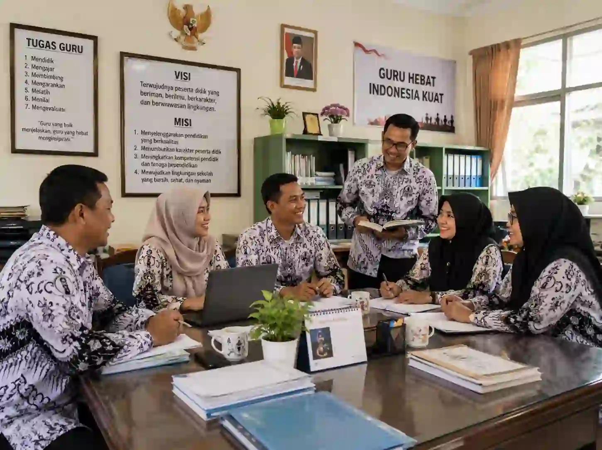
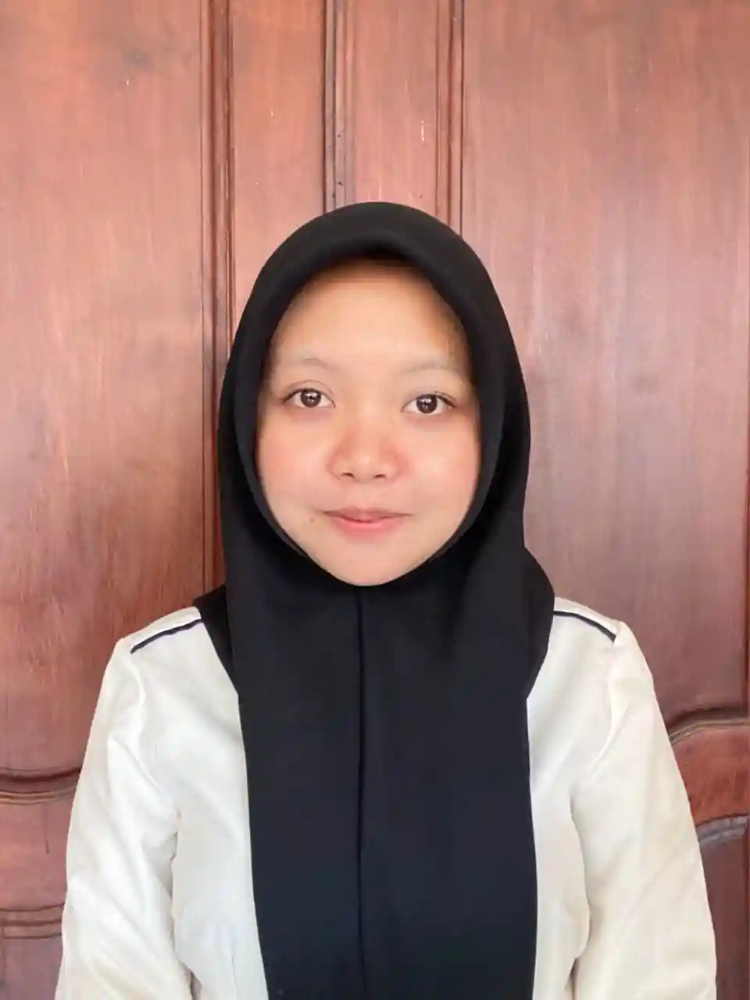
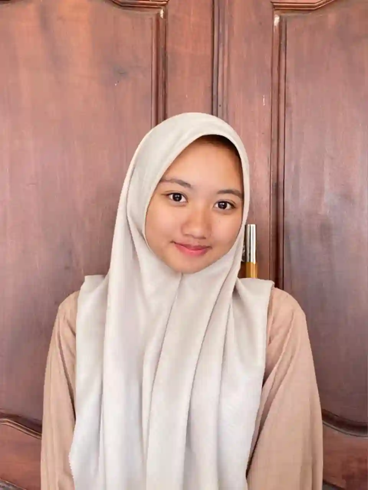

Kota Pendidikan Inspiratif
Pendidikan Berkualitas untuk Generasi Emas Malang
Wujudkan masa depan gemilang dengan dukungan infrastruktur edukasi terbaik, tenaga pengajar profesional, dan lingkungan belajar inklusif di Kota Malang.
500+
Sekolah & Kampus
98%
Tingkat Kelulusan
50+
Perguruan Tinggi
10k+
Pendidik Ahli

110
Tahun Sejarah
Pendidikan
Pendidikan
Tentang Kami
Kota Malang, Pusat Pendidikan Berkarakter
Sebagai salah satu destinasi edukasi terbesar di Indonesia, Kota Malang terus berkomitmen menghadirkan ekosistem belajar yang inovatif, ramah anak, dan berstandar global.
Dari jenjang dasar hingga perguruan tinggi terkemuka, kami memastikan setiap warga memiliki akses terhadap fasilitas pendidikan memadai, kurikulum yang adaptif, serta program pengembangan karakter yang kuat untuk menyambut tantangan masa depan.
Kurikulum Merdeka
Fasilitas Terpadu
Tenaga Pengajar Ahli
Lingkungan Aman
350
Sekolah Berprestasi
100
Program Beasiswa
99%
Angka Partisipasi
Program Edukasi
Inisiatif unggulan untuk memajukan standar pendidikan di seluruh penjuru kota
Literasi Digital
Program peningkatan kemampuan literasi teknologi bagi siswa dan guru untuk menghadapi era industri 4.0.
SelengkapnyaBeasiswa Prestasi
Dukungan finansial dari pemerintah kota bagi siswa berprestasi di bidang akademik maupun non-akademik.
Selengkapnya
Unggulan
Sekolah Ramah Anak
Mewujudkan lingkungan belajar yang inklusif, aman, bebas perundungan, dan memprioritaskan kesejahteraan mental siswa.
SelengkapnyaDigitalisasi Kelas
Penyediaan infrastruktur jaringan cerdas dan perangkat pendukung pembelajaran online di tiap sekolah negeri.
SelengkapnyaSeni & Budaya Lokal
Mengintegrasikan muatan lokal budaya dan kesenian khas Malangan ke dalam kurikulum ekstrakurikuler sekolah.
SelengkapnyaSatgas Anti Perundungan
Pembentukan unit khusus edukasi di tiap instansi pendidikan untuk mencegah dan menangani kasus bullying.
Selengkapnya
250+
Program Selesai
98%
Kepuasan Wali Murid
15+
Tahun Dedikasi
40+
Komunitas Relawan
Galeri Pendidikan
Dokumentasi aktivitas, prestasi, dan fasilitas pendidikan unggulan di Kota Malang
- Semua Galeri
- Fasilitas
- Kegiatan Siswa
- Prestasi
- Ekstrakurikuler
 Fasilitas
Fasilitas
Perpustakaan Digital Terpadu
Fasilitas literasi modern untuk menunjang minat baca siswa.
 Kegiatan Siswa
Unggulan
Kegiatan Siswa
Unggulan
Pameran Sains Pelajar
Unjuk karya dan inovasi sains siswa-siswi tingkat SMA se-Kota Malang.
 Prestasi
Prestasi
Olimpiade Matematika Nasional
Kontingen Kota Malang meraih juara umum pada kompetisi akademik bergengsi.
 Ekstrakurikuler
Ekstrakurikuler
Festival Seni Tari Daerah
Pelestarian budaya melalui ekstrakurikuler seni tari di sekolah menengah.
 Fasilitas
Fasilitas
Laboratorium Komputer Modern
Penyediaan perangkat terkini untuk mendukung mata pelajaran informatika.
 Kegiatan Siswa
Kegiatan Siswa
Kampanye Lingkungan Sehat
Edukasi pengelolaan sampah dan penghijauan lingkungan oleh pelajar.
 Ekstrakurikuler
Unggulan
Ekstrakurikuler
Unggulan
Klub Robotika Pelajar
Membina bakat-bakat muda dalam merancang dan memprogram robot cerdas.
 Prestasi
Prestasi
Penghargaan Adiwiyata Mandiri
Apresiasi tertinggi untuk sekolah berwawasan lingkungan dan berkelanjutan.
Siap Berprestasi?
Mari Bersama Membangun Pendidikan yang Lebih Baik
Jadilah bagian dari ekosistem pendidikan terbaik di Jawa Timur. Dukung terus program-program pengembangan karakter dan akademik demi generasi masa depan.
Mengapa Pendidikan Malang?
Faktor utama yang menjadikan kota kami sebagai destinasi pendidikan terfavorit
Terakreditasi
Institusi Unggulan
Sebagian besar sekolah dan universitas di Malang memiliki akreditasi A (Sangat Baik) dari lembaga penilai nasional.
Pendekatan Berbasis Analitik
Penerapan evaluasi pembelajaran berbasis data untuk mengetahui potensi dan kekurangan siswa secara spesifik.
Pengajar Berdedikasi & Berprestasi
Dididik oleh guru dan dosen yang tidak hanya mumpuni secara akademis, namun juga memiliki dedikasi tinggi.
Peta Jalan Pendidikan Kami
1
Riset Kebutuhan
Analisis potensi anak
2
Rancangan Kurikulum
Penyusunan metode
3
Penerapan Belajar
Eksekusi di kelas
4
Evaluasi & Peningkatan
Penyempurnaan hasil
Apa Saja yang Kami Hadirkan
Konseling Karir Terarah
Membantu pelajar menentukan jurusan dan jalur karir sejak dini sesuai minat dan bakat.
Pembelajaran Terkustomisasi
Metode pengajaran inklusif yang disesuaikan dengan kecepatan belajar masing-masing anak.
Peningkatan Mutu Berkelanjutan
Selalu memperbarui sarana, prasarana, dan kualitas tenaga kependidikan mengikuti perkembangan zaman.
Kisah Sukses Alumni & Siswa Berprestasi
Inspirasi dan pengalaman nyata dari mereka yang telah mengukir prestasi dan sukses membangun karier




+2.5kBimbingan intensif dari para pengajar profesional di Malang sangat membantu saya dalam mendalami ilmu sains hingga berhasil meraih medali emas di tingkat nasional.
Ekosistem startup dan riset digital di lingkungan kampus Malang sangat suportif. Hal ini memberi ruang besar bagi saya untuk mengembangkan platform edutech sejak masih kuliah.

Dukungan infrastruktur belajar dan penyediaan kelas digital terpadu selama masa sekolah membuka jalan lebar bagi saya untuk lolos seleksi beasiswa penuh di luar negeri.

Tokoh Pendidikan
Pilar penting dan inspirator di balik ekosistem edukasi unggul Kota Malang

Kepala Dinas
Dr. Anggunly S.H., S.Psi.
Kepala Dinas Pendidikan Kota Malang

Ketua Komite
Dr. Hawaaa M.Pd, S.Kom.
Ketua Komite Pendidikan Kota Malang

Rektor
Prof. Dr. Indri S.Kom., S.Ked.
Pakar Kurikulum & Pendidikan Tinggi

Ketua Komite
Dr. Megameii S.H., M.Hum.
Ketua Komite Perwakilan Wali Murid
50+
Tim Ahli Kurikulum
5
Kecamatan Binaan
10+
Tahun Pengabdian Rata-rata
Kontak Kami
Pusat layanan informasi, pendaftaran, dan pengaduan Dinas Pendidikan Kota Malang
Pusat Layanan
Sampaikan Aspirasi Anda
Kami senantiasa terbuka untuk mendengarkan masukan, pertanyaan seputar PPDB, atau kendala pendidikan yang Anda alami.
Email Pengaduan
diknas@malangkota.go.id
Call Center
+62 (341) 123-4567
Alamat Kantor
Jl. Veteran No.19, Ketawanggede, Kota Malang, Jawa Timur
98%
Laporan Selesai
24/7
Akses Informasi
3.2k
Pendaftar Harian
Kirimkan Pesan Anda
Silakan isi formulir di bawah ini dan Anda akan langsung terhubung dengan layanan WhatsApp resmi kami.
Pesan akan dialihkan secara aman ke WhatsApp resmi EduMalang